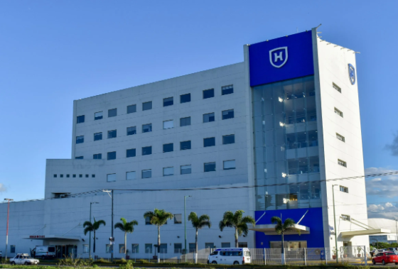

Hospital 🏥

La comunidad que integra Hospitales Puerta de Hierro –médicos, enfermería, técnicos, personal operativo y administrativo– tiene el compromiso de brindar un diagnóstico y tratamiento oportuno en beneficio de sus pacientes. Hospitales Puerta de Hierro se consolida como una institución reconocida en la región occidente de México, brindando atención oportuna bajo la firme creencia que la vida de nuestros pacientes es nuestra vocación.
Hospital en Tepic – El hospital Puerta de Hierro Tepic inicia operaciones en septiembre de 2010. Se distingue por ser un hospital de especialidades integrado por un cuerpo médico reconocido a nivel nacional e internacional, que brinda excelencia en la atención, seguridad y calidez humana. Cuenta con la mejor tecnología avanzada para el diagnóstico oportuno, en beneficio de la comunidad.
Es el único hospital privado que cuenta con licencia para realizar trasplantes de riñón en el estado de Nayarit. De igual manera, es el único con un laboratorio clínico, tomografía y resonancia magnética dentro de sus instalaciones, por lo que su paciente no tendrá que trasladarse largas distancias.
Sus cómodas instalaciones de vanguardia, los médicos más renombrados y un destacado nivel de atención, hacen la diferencia.
Reciba a su bebé en Hospital Puerta de Hierro Tepic. Contamos con excelentes paquetes de maternidad: quirófanos, suites, unidad de cuidados intensivos neonatales y todo lo necesario para hacer de esta una gran experiencia.
Nuestro hospital cuenta con servicios de urgencias, consulta general, cirugía general, traumatología y ortopedia, medicina interna, pediatría, odontología, servicios de laboratorio, rayos X, consultas médicas, hospitalización, cirugías, atención de emergencias, cuidados intensivos, maternidad, entre otros.